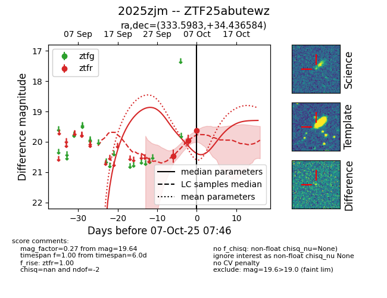
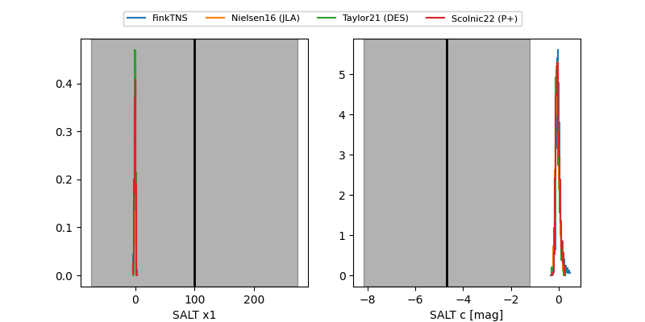

FINK: ZTF25abutewz
Lasair: ZTF25abutewz
ALeRCE: ZTF25abutewz
TNS: 2025zjm
YSE: 2025zjm
ZTF25abutewz (ztf,fink)
2025zjm (tns,yse)
equatorial (ra, dec) = (333.5983,+34.43658)
galactic (l, b) = (89.6277,-18.08775)


last ztfr=19.64
3 ztfr detections